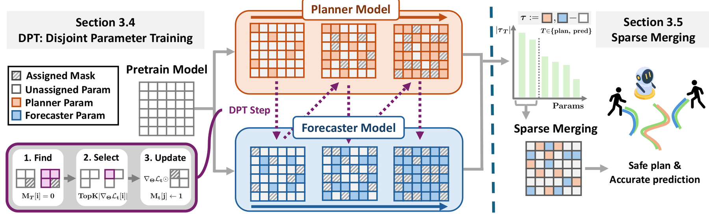
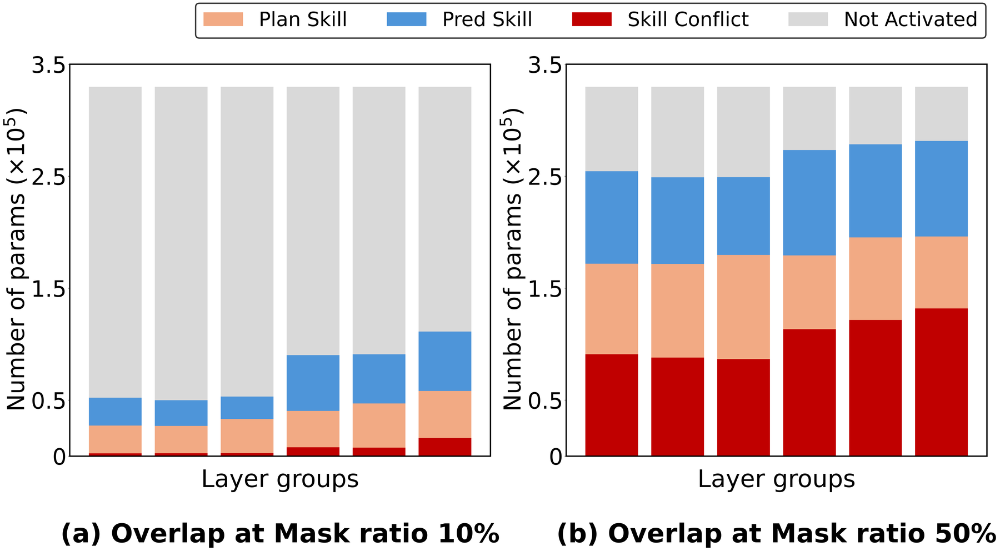
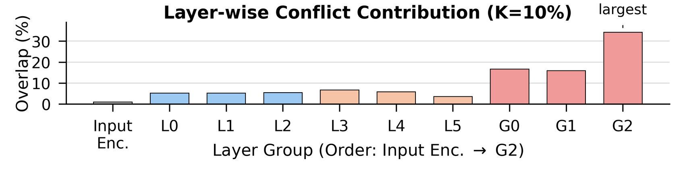
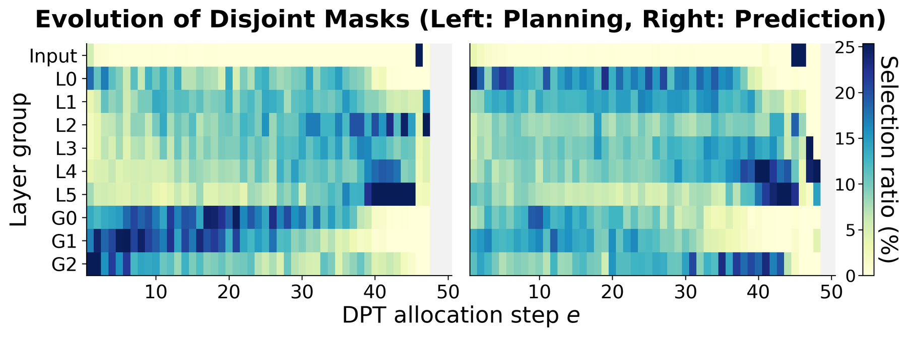
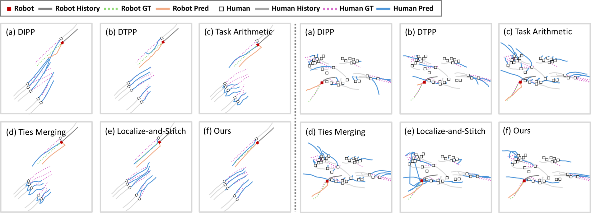

Unified Prediction and Planning via Conflict-Aware Disjoint Parameter Training
Abstract
Accurate motion prediction of surrounding agents and safe motion planning are two closely coupled key tasks for social robot navigation in crowded environments. Deploying these systems on resource-constrained edge devices necessitates compact, unified models that can perform both tasks simultaneously. However, within these compact shared encoders, recent unified models often overlook severe representational conflicts that arise from the distinct objectives of predicting neighbor behaviors versus ego-centric safety planning.
To address this issue, we first identify the Skill Conflict — a phenomenon where overlapping parameter assignments cause distinct tasks to compete for the same weights, preventing the model from fully specializing in individual skills. To resolve this, we propose a novel model-merging-based framework, Disjoint Parameter Training (DPT). DPT mitigates performance degradation caused by Skill Conflict through distributed parameter learning, which separates the key parameter regions of each task while preserving their core capabilities prior to merging. In addition, we observe that sparse merging, which selectively integrates only the most influential parameters for each task, yields optimal performance by preventing interference among adjacent features and concentrating representational capacity. Evaluated on standard crowd navigation benchmarks (JRDB and JTA), our framework demonstrates superior performance, validating its versatility and effectiveness for safe, resource-efficient robot navigation.
Contributions
- We define and analyze the Skill Conflict problem caused by shared encoder representations in compact, unified prediction-planning models for robot navigation.
- We propose Disjoint Parameter Training (DPT), which separates and localizes each task's core skills within distinct parameter regions, and introduce sparse merging to prevent representational interference among neighboring features.
- Our method achieves superior performance, maintaining accurate prediction and safe planning across standard crowd navigation benchmarks (JRDB and JTA), validating its effectiveness for resource-efficient mobile robots.
Method

Overview of our framework. In the DPT step, task-specific models for prediction and planning are generated by separating their training regions with binary masks, minimizing skill conflict. In Sparse Merging, the two fine-tuned models are combined into a single unified model by utilizing only the most significant task vectors, effectively preserving each task's skill.
Analysis & Results

Skill Conflict grows with parameter usage. As the mask ratio increases from 10% to 50%, the overlap between Plan and Pred skills (red) rises sharply, revealing severe skill conflict within the shared encoder.

Conflict concentrates in the late global layers. The layer-wise distribution of skill conflict is small in early/local layers but spikes in the global layers (G0–G2), peaking at the last one.

Evolution of disjoint masks across DPT allocation steps. Planning (left) and Prediction (right) progressively claim distinct parameter regions across layer groups, separating each task's core skill.

Qualitative results on JRDB. Compared with unified-model and model-merging baselines (a–e), our DPT + Sparse Merging (f) predicts surrounding agents more accurately and produces safer plans.
BibTeX
The citation will be available once the paper is published.